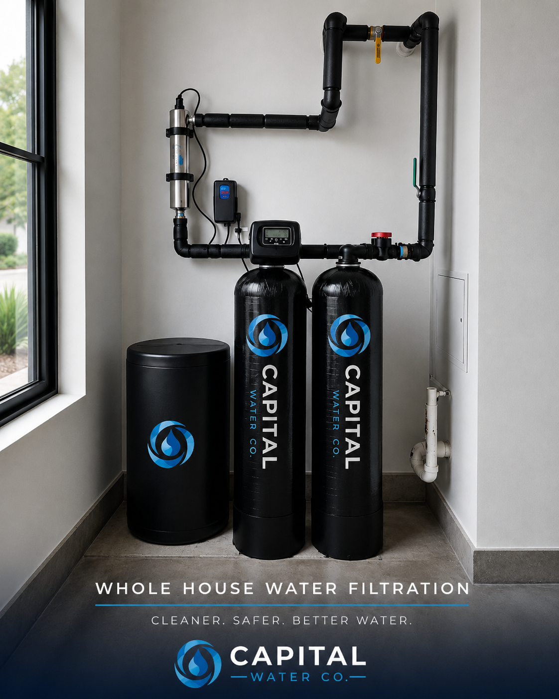
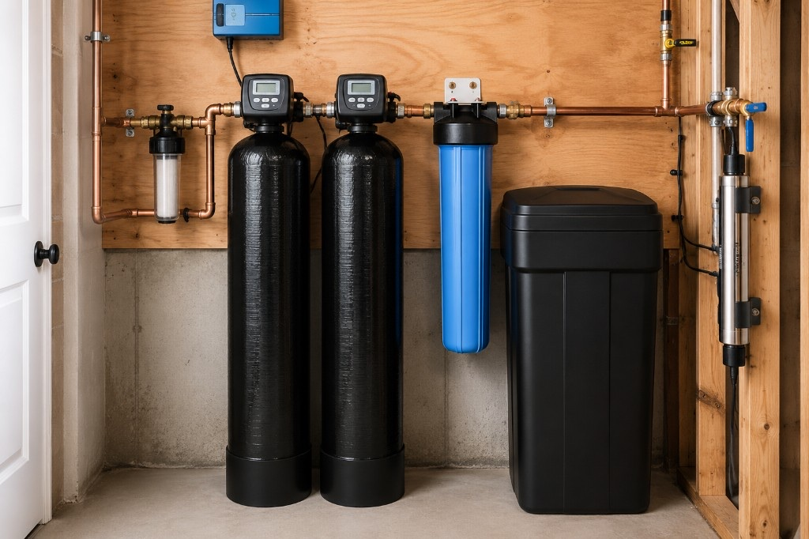

Whole House Water Filtration for Baton Rouge Homes
Capital Water Co. installs whole-home water filtration for households across Baton Rouge, New Orleans, and Southeast Louisiana, helping reduce sediment, chlorine, and common water concerns at every tap. From older homes with aging plumbing to newer builds needing better-tasting water, each system is matched to the property, installed carefully, and designed for dependable daily performance.

Cleaner water, smarter setup
Choose Capital Water Co. for Professional Whole-Home Water Filtration Services
- Thoughtful System Matching: Capital Water Co. evaluates household water concerns, plumbing layout, and daily usage before recommending equipment. That process helps avoid oversized or undersized systems, whether a family is dealing with chlorine taste, visible sediment, or hard water symptoms during cooking, bathing, and laundry routines.
- Streamlined Installation for Local Homes: Capital Water Co. installs filtration systems with attention to shutoff access, pipe configuration, and serviceability for future maintenance. In Baton Rouge, LA, that matters for homes ranging from established neighborhoods with older plumbing to newer properties where owners want cleaner water without disrupting busy weekday schedules.
- Consistent Performance at Every Tap: Capital Water Co. focuses on reliable filtration that supports drinking, showering, dishwashing, and appliance use throughout the house. Instead of treating only one faucet, a whole-home approach helps create a more uniform water experience during normal mornings, guest visits, and high-use weekends.
Better water starts here
Why Professional Whole-Home Water Filtration Services Matter for Your Property
- Local Water Conditions Can Vary: Water quality concerns can differ by neighborhood, pipe age, and municipal treatment factors, making whole-home filtration a practical upgrade. In Baton Rouge, LA, homeowners often want added protection against chlorine taste, sediment, and other issues that affect showers, cooking, and everyday water use.
- Health and Daily Comfort Go Together: Filtration can support a cleaner-feeling experience for bathing, drinking, and food preparation by reducing common contaminants and nuisance elements. For households with children, older adults, or sensitive skin, better water quality often becomes part of a broader effort to improve comfort and hygiene indoors.
- Move-In and Ongoing Readiness Matter: A filtration system can make a property feel more livable from the start, especially after moving into a resale home or preparing a house for long-term occupancy. Cleaner water at every tap helps reduce the need for temporary pitchers, bottled water, and room-by-room workarounds.

FREQUENTLY ASKED ・ ANSWERS TO YOUR QUESTIONS
Frequently Asked Questions About Whole-Home Water Filtration Services
Do older homes need Whole-Home Water Filtration Services more than newer houses?
Older homes may benefit more when aging pipes, sediment, or inconsistent water quality affect multiple fixtures, though newer houses can also need filtration for taste, odor, or chlorine concerns. Capital Water Co. helps homeowners compare water conditions, plumbing layouts, and household usage before selecting a system that fits the property.
What does Whole-Home Water Filtration Services include for a family home with multiple bathrooms?
Service typically includes water evaluation, equipment selection, installation at the main line, and guidance on filter maintenance so treated water reaches every bathroom, kitchen fixture, and appliance. Capital Water Co. reviews flow demands, available space, and plumbing access to recommend a setup that supports larger household routines.
How should condo owners compare Whole-Home Water Filtration Services with under-sink systems?
Condo owners should compare building plumbing rules, available installation space, and whether treatment is needed at one faucet or throughout the unit. Capital Water Co. can explain when a point-of-use filter makes sense and when broader water treatment is worth considering for showers, laundry, and kitchen use.
SERVICE AREA
Find Us
Capital Water Co. installs whole-home water filtration in Baton Rouge and New Orleans, plus nearby communities such as Prairieville, Gonzales, Denham Springs, Covington, and Mandeville. Request a free consultation to talk through a system for your home.